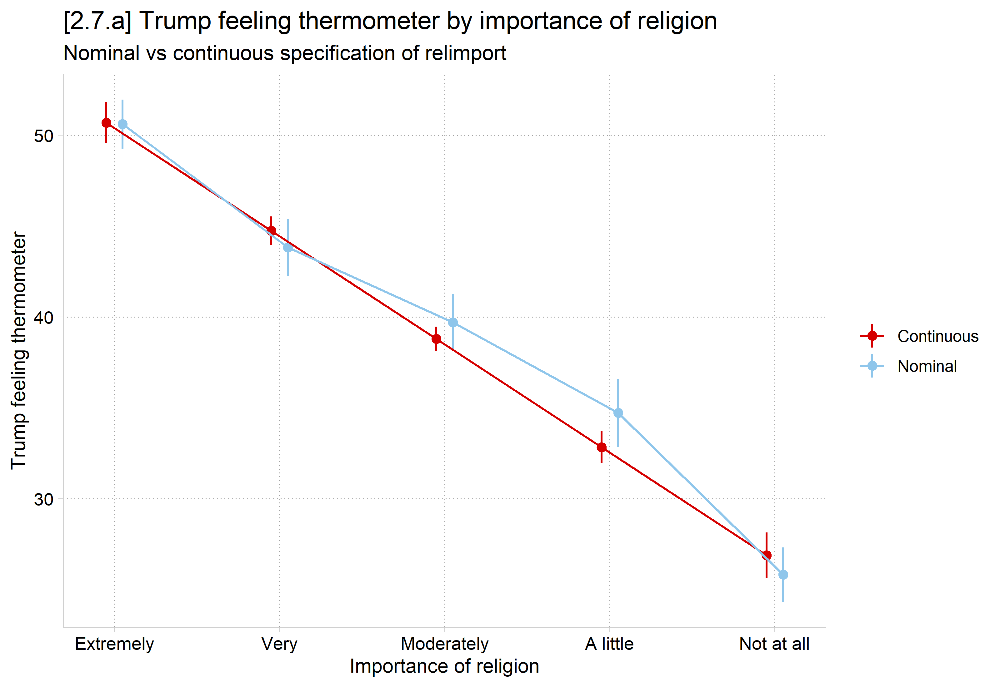

library(haven) # import Stata data and labels
library(dplyr) # data manipulation
library(ggplot2) # graphs
library(marginaleffects) # predictions and marginal effects
library(cleanplots) # graph scheme
cleanplots_defaults()
source("https://raw.githubusercontent.com/tdmize/Rfunctions/main/ME_helper_functions.R")
anes <- read_dta("https://tdmize.github.io/data/data/cda_anes.dta")
# Keep only model vars and drop any missing data on them
anes <- anes[c("feel_trump", "age", "hhincome", "woman", "lgb", "race4",
"educ", "relimport", "wrongtrack")]
anes <- anes[complete.cases(anes), ]
# Treat binary/nominal variables as factors using their value labels
anes <- anes |> mutate(woman = as_factor(woman), lgb = as_factor(lgb),
race4 = as_factor(race4), wrongtrack = as_factor(wrongtrack))
conmod <- lm(feel_trump ~ as.numeric(relimport) + as_factor(educ) + age + hhincome +
woman + lgb + race4 + wrongtrack, data = anes)
con_reli <- avg_predictions(conmod, by = "relimport",
newdata = datagrid(relimport = unique, grid_type = "counterfactual"))
con_reli
relimport Estimate Std. Error z Pr(>|z|) S 2.5 % 97.5 %
1 50.7 0.576 88.0 <0.001 Inf 49.6 51.8
2 44.7 0.404 110.6 <0.001 Inf 43.9 45.5
3 38.8 0.346 112.2 <0.001 Inf 38.1 39.5
4 32.8 0.447 73.5 <0.001 Inf 32.0 33.7
5 26.9 0.635 42.3 <0.001 Inf 25.6 28.1
Type: responsenommod <- lm(feel_trump ~ as_factor(relimport) + as_factor(educ) + age + hhincome +
woman + lgb + race4 + wrongtrack, data = anes)
nom_reli <- avg_predictions(nommod, by = "relimport",
newdata = datagrid(relimport = unique, grid_type = "counterfactual"))
nom_reli
relimport Estimate Std. Error z Pr(>|z|) S 2.5 % 97.5 %
1 50.6 0.689 73.5 <0.001 Inf 49.3 52.0
2 43.8 0.793 55.2 <0.001 Inf 42.3 45.4
3 39.7 0.783 50.7 <0.001 Inf 38.2 41.2
4 34.7 0.953 36.4 <0.001 963.4 32.9 36.6
5 25.8 0.765 33.7 <0.001 827.0 24.3 27.3
Type: responsereli_prs <- bind_rows(Continuous = con_reli, Nominal = nom_reli, .id = "spec")
ggplot(reli_prs, aes(x = relimport, y = estimate, ymin = conf.low, ymax = conf.high,
color = spec)) +
geom_pointrange(position = position_dodge(width = 0.2)) +
geom_line(position = position_dodge(width = 0.2)) +
scale_x_continuous(breaks = 1:5,
labels = c("Extremely", "Very", "Moderately", "A little", "Not at all")) +
labs(title = "[2.7.a] Trump feeling thermometer by importance of religion",
subtitle = "Nominal vs continuous specification of relimport",
x = "Importance of religion", y = "Trump feeling thermometer", color = NULL)